Asciidoc(tor) Workshop
A swift workshop introduction into creating beautifil Asciidoc-based PDFs, HTML and RevealJS presentations
About Me

Benjamin Schmid, @bentolor
25+ years in the software industry
Roles: CTO, Division Head, Manager Research & Innovation, Solution Architect, …
Regular author & speaker
Big fan of lightweight markup formats for documentation: „Focus on the content vs. coping with the formatting“
Workshop Goals
Understanding the basics of AsciiDoc, Asciidoctor & RevealJS
Learn, understand and use the most basic tools
Get a hands-on experience writing AsciiDoc documents
Create a HTML and PDF version of a document
Apply advanced AsciiDoc features
Create a simple RevealJS-based presentation
Understand the inner workings & interrelations
Understand advanced techniques to create, style & debug RevealJS-based presentations
Agenda
Session #1 (~3h)
Introduction & Overview
Overview: Asciidoc(tor) & Tools
Checkpoint: Installation
Workshop: Writing AsciiDoc documents
Break
Overview RevealJS
Workshop: My first presentation
Session #2 (2~3h)
Q&A
Presentation design
Advanced Asciidoc syntax
Break
Advanced topics
Q&A & farewell
Overview
What is AsciiDoc & Asciidoctor?
AsciiDoc is a text document format for writing notes, documentation, articles, books, ebooks, slideshows, web pages, man pages and blogs.
AsciiDoc files can be translated via the Asciidoctor toolchain to many formats including HTML, PDF, EPUB, DocBook, ….
| AsciiDoc is the language. Asciidoctor is the processor. |
A basic AsciiDoc document
= Document title: Subtitle
Firstname Lastname <email@address.com>
Version 1.2, 2022-12-17: First revision
:stylesheet: theme/theme.css
This is the document preamble, which is optional.
By default it will render using a larger font size.
== First section
Content with *bold* content, or _italic_ or `monospaced` text.
=== A subsection
A nested section. Lists area easy
* First element
* Second elementUsing Asciidoctor tools…
… AsciiDoc text documents can be rendered into various, styled formats:
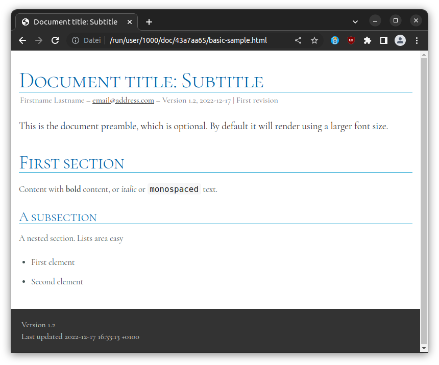 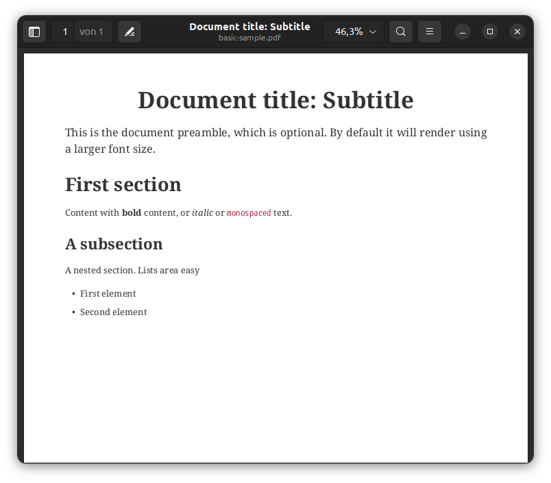
Checkpoint: Installation
Assert CLI tool availability
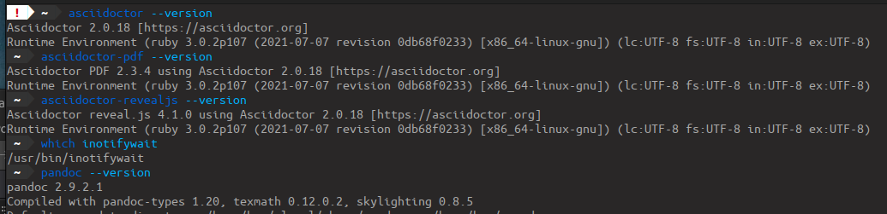
Assert Visual Studio Code installation
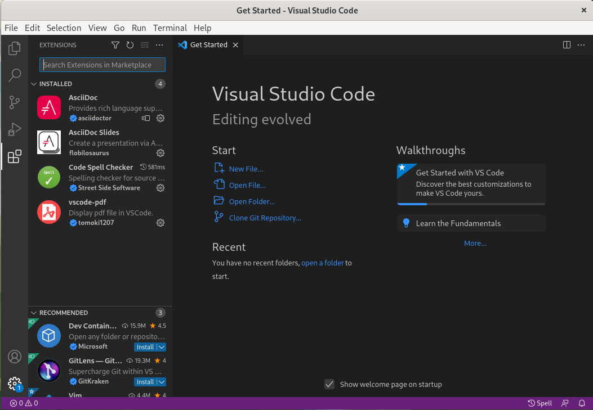
Launch "Visual Studio Code". Open the left toolbar click on "Extensions" (also: Ctrl+Shift+X).
Assert you find at least the four installed extensions
Create a new document
Press Ctrl+N and save the file via Ctrl+S as playground.adoc.
Alternatively you can use File ▸ New Textfile and File ▸ Save
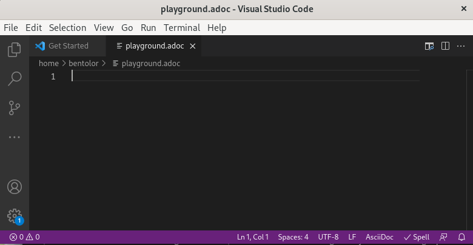
| Assert you see "AsciiDoc in the right-lower corner of the window!" |
Open the Preview
Press Ctrl+Shift+P
Type
previewSelect AsciiDoc: Open Preview to the Side
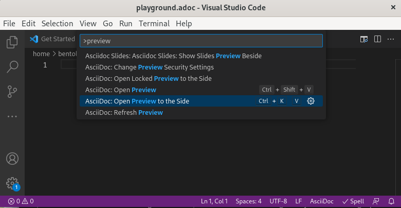
Type your first document
Now just type the text below into the editor on the left.
You should see the preview like on the right.
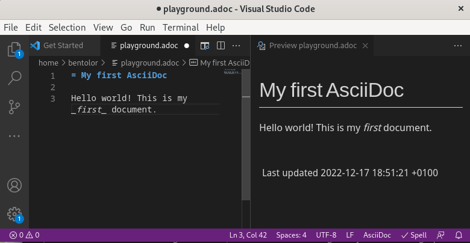
= My first AsciiDoc
Hello world! This is my _first_ document.Interactive Demo #1
| See workshop-interactive-demosession1.adoc for transcript |
Recap: Demo #1
Structuring
= Document Title
== Section 1
=== Section 1.1
A paragraph is a sequence of text.
Even if written on separate lines
To start a new paragraph, insert an empty line.
.This is a paragraph title
A new paragraph
== Section 2Text Formatting
* a *lightweight markup standard*.
* similarly simple as Markdown, +
but _much_ more comprehensive & powerful
* and #markup# or [small]#custom styles# alloweda lightweight markup standard.
similarly simple as Markdown,
but much more comprehensive & powerfuland markup or custom styles allowed
Lists
* List item
** Nested list item
*** Deeper nested list item
* List item
** Another nested list item
* List item
.List Title
. Step 1
. Step 2
.. Step 2a
.. Step 2b
. Step 3.Checklist
* [*] checked
* [x] also checked
* [ ] not checked
* normal list item
.Definition List
[horizontal]
First term:: The description can start on
the same line as the term.
Second term::
Description of the second term.
The description can also start on its own line.Images & Videos
image::../media/3rdparty/template.jpg[]
.A image title
image::../media/3rdparty/template.jpg[A image label, width=20%]
With only one `:` an
image:https://asciidoctor.org/images/octocat.jpg[Mascot, role=left]
becomes an inline image. +
It is part of the paragraph
.Videos
video::153425222[vimeo]
or with URL / relative file path:
video::https://sample-videos.com/…/big_buck_bunny_360p_10mb.mp4[Big Bunny]Challenge #1
Workshop Challenge
Recreate a document like on the right. It should include:
A document title
You as an author
Header and subheaders
An ordered list
Some basic formatting
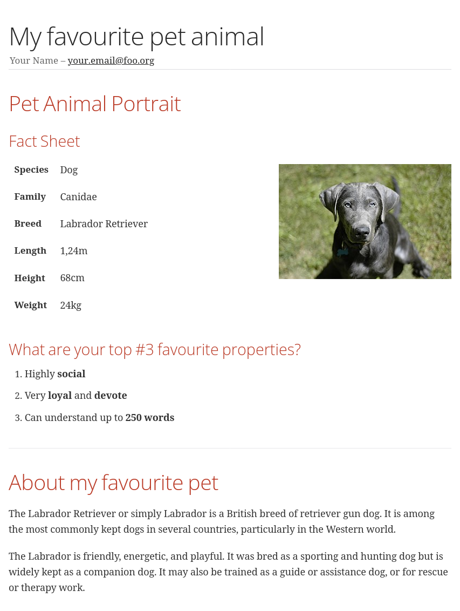
Interactive Demo #2
| See workshop-interactive-demosession2.adoc for transcript |
Recap: Demo #2
Tables → Source
[cols=">1h,4"]
|===
| tables | with explanations
| structured presentation | often important for specifications
| Features | like weight, alignment, ...
2+| or connected cells
| Multiline
| Style of writing
|===Tables → Result
| tables | with explanations |
|---|---|
structured presentation | often important for specifications |
Features | like weight, alignment, … |
or connected cells | |
Multiline | Style of writing |
Advanced elements like
- Definition lists
… e.g. for glossaries.
Or font icons which can be included .
| Or Admonitions sections such as NOTE, TIP, IMPORTANT, CAUTION, WARNING. |
They can easily be applied like this:
[NOTE]
Or Admonitions sections such as NOTE, TIP, IMPORTANT, CAUTION, WARNING.Challenge #2
Workshop Challenge
Update your document:
Use a table in "Fact Sheet"
Add icons
Add the Info-Box
Add a link to the Wikipedia Page
Optional:
Extract the quote into a separate
quote.txt
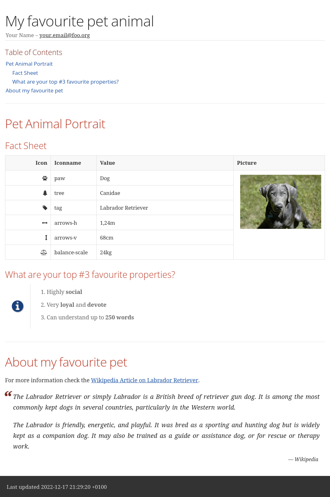
Creating Output
Document rendering: Using CLI tools
| HTML |
|
| |
| Slides |
|
| Word |
|
It can also produce formats like Docbook, LaTeX, EPUB, …
Document rendering: Using Editors & Viewers
Editor plugins, i.e. Visual Studio Code, IntellIJ, …
Browser plugins
In Visual Studio Code
Press Ctrl+Shift+P
Choose "AsciiDoc: Save HTML document"
or "AsciiDoc: Export document as PDF"
| Create PDF & HTML of your Pet Sheet in Visual Studio Code. Repeat on the command-line. |
asciidoctor-revealjs
What is RevealJS?
A JavaScript library
Allows to create interactive HTML5 presentations
Works on HTML Code
Has plenty of Features
Plugins can extend Functionality
(Source Code Highlighting, Speaker Notes, …)
What is asciidoctor-revealjs?
An Asciidoctor backend: It allows to convert AsciiDoc files into HTML flavoured to work with RevealJS
Therefore asciidoctor-revealjs tries to map the RevealJS features into the AsciiDoc syntax
Example
<section data-background-color="aquamarine">
<h1>My slide title</h1>
<p>My <b>slide</b> content</p>
</section>is written in AsciiDoc as
[background-color="aquamarine"]
== My slide title
My *slide* contentMy slide title
My slide content
Documentation
My first slidedeck
Create & save a new
mypresentation.adocPress Ctrl+Shift+P, type slides and choose Show Slides Preview Besides.
Enter text below. You should see the same.
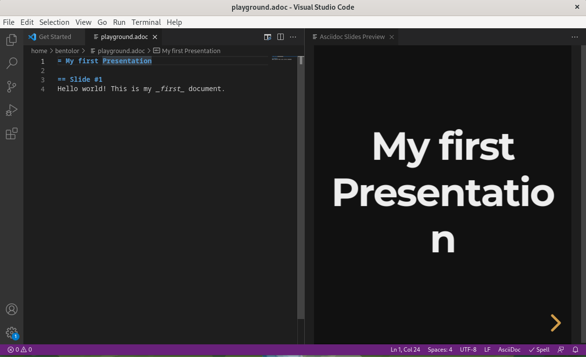
Interactive Demo #3
| See workshop-interactive-demosession3.adoc for transcript |
Homework
Create your presentation using tool
Play around and bring questions for the next session.
End of Session #1
Welcome to Session #2
Questions?
Use the template project
Clone the Project
$ git clone https://github.com/bentolor/asciidoctor-template.git
$ cd asciidoctor-templateStart Visual Code in this project
$ code .Select "Yes, I trust the authors".
Understanding the template structure
| Contains the workshop materials |
| Put your images & videos here |
| RevealJS distribution 3.9.2 |
| Prepared theme files for PDF, HTML and Slides |
| Scripts to render html, pdf, docx and presentation |
| A template presentation |
| A template document |
Run the renderes
Try out all render-x scripts and open the generated files. |
Tipps on using Visual Studio Code as editor
Advanced Usage
Starting from this section on, you should engineer your presentation by:
Starting the
render-presentationscriptUsing the Browser to inspect your result
Stop rendering by pressing Strg+C
| We’ll start to used advanced features no longer supported by the inline AsciiDoc slide Preview. |
Practical Tips
VSCode: Code Snippets
Press [Ctrl]+[Space] and to look up code snippets:
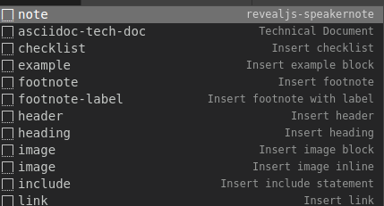
You can also just type the snippet (i.e. table and press [Tab] to insert them quickly.
How to find background images
Find and download free very large image as background
Edit it to reduce the contrast for better legibility
Note down its dimensions and declare it using Asciidoc attributes:
:revealjs_parallaxBackgroundImage: media/pexels-scott-webb-2117938.jpg :revealjs_parallaxBackgroundSize: 8192px 4863px
Spacing
You can force empty lines by…
{nbsp}
between elements. {nbsp} is an invisible, non-empty whitespace character.…or apply the custom .tgap / .bgap style.
Works on images, tables, paragraphs, etc.
[.tgap]
…or apply the custom `.tgap` / `.bgap` style. +
Works on images, tables, paragraphs, etc.Applying CSS styles/classes
On blocks
[.class1.class2]
--
A invisible block
--On slides
[.class1.class2]
== A slide sectionAt images
[.class1.class2]
image::image.jpg[an image]At a single paragraph / line / list entry
* A list entry
* Another entry <!-- .element: class="decent" -->Some of my template CSS classes
| CSS class | Applied | Description |
|---|---|---|
| Image | Render without decorations |
| Slide | Left-align all text |
| Slide | Use all available space |
| Slide | Render slide content smaller. Also |
| Content | Render top gap. |
| Content | Render bottom gap. |
| Text | Make text decent gray. |
| Block | A floating column. |
| Slide | Drag slide content/title to the top. |
| Slide | Drag slide content/title to the bottom. |
Interactive Demo #4
| See presentation.adoc for transcript |
Debugging layout issues
If you stumble over issues, use the Browser inspection tools to understand the situation.
Most issues can be solved by creating a custom CSS rule or creating a new CSS class and assigning that to something.
Printing
RevealJS offers a method to create PDFs using Chrome browser and appending ?print-pdf.. Please try.
Personally I have had very mixed results and resorted into mass-screenshoting my presentation and converting the *.png files into a single PDF like
$ convert -quality 90 -compress jpeg screenshot*.png presentation.pdfImportant Resources
Documentation Resources
- https://docs.asciidoctor.org/asciidoc/latest/
Your most important documentation resource on Asciidoc usage.
- https://docs.asciidoctor.org/reveal.js-converter/latest/
The Asciidoctor backend plugin: This is the tool converting Asciidoc syntax to RevealJS syntax. Your 2nd most important documentation source to understand how you can do things in a
asciidoctor-revealjspresentation.- https://revealjs.com/
The RevealJS HTML presentation framework. The backend for creating the nice HTML presentations.
- https://github.com/bentolor/asciidoctor-template
The template used in this workshop.
Media Resources
- https://www.pexels.com/videos/
Find free, liberally licensed short videos and pictures, ideally as background videos during section breaks.
- https://www.freeimages.com/
Tons of great inspiration and mood pictures with a very liberal license.